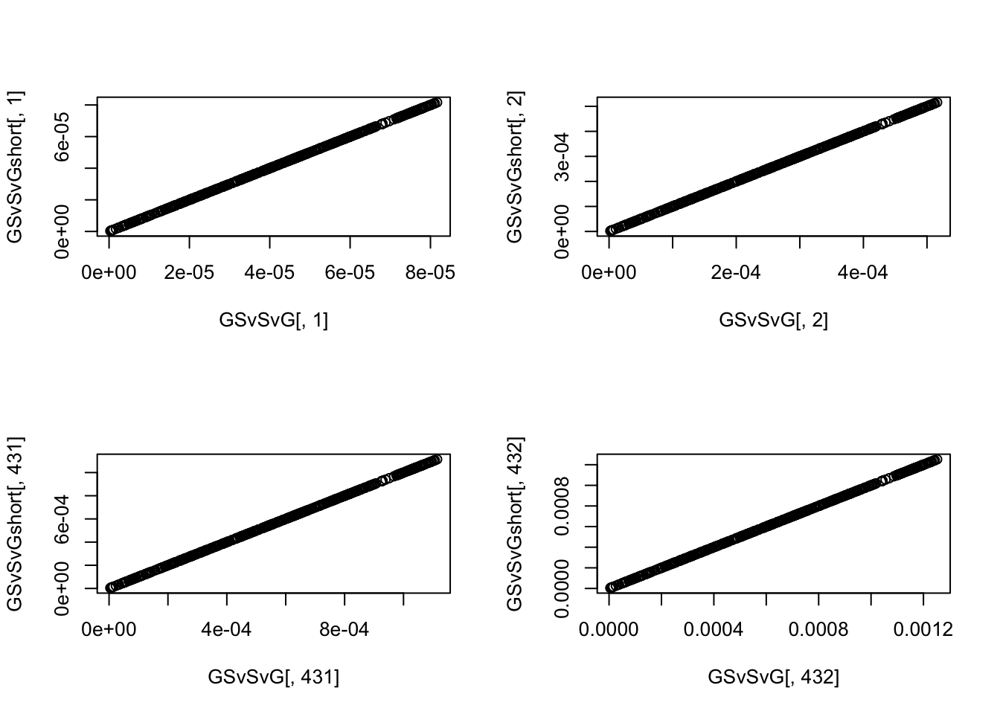

Proof
Jennifer Blanc
2/5/2022
Last updated: 2022-02-07
Checks: 7 0
Knit directory: polygenic_adaptation_stratification/analysis/
This reproducible R Markdown analysis was created with workflowr (version 1.6.2). The Checks tab describes the reproducibility checks that were applied when the results were created. The Past versions tab lists the development history.
Great! Since the R Markdown file has been committed to the Git repository, you know the exact version of the code that produced these results.
Great job! The global environment was empty. Objects defined in the global environment can affect the analysis in your R Markdown file in unknown ways. For reproduciblity it’s best to always run the code in an empty environment.
The command set.seed(20201015) was run prior to running the code in the R Markdown file. Setting a seed ensures that any results that rely on randomness, e.g. subsampling or permutations, are reproducible.
Great job! Recording the operating system, R version, and package versions is critical for reproducibility.
Nice! There were no cached chunks for this analysis, so you can be confident that you successfully produced the results during this run.
Great job! Using relative paths to the files within your workflowr project makes it easier to run your code on other machines.
Great! You are using Git for version control. Tracking code development and connecting the code version to the results is critical for reproducibility.
The results in this page were generated with repository version e474fc2. See the Past versions tab to see a history of the changes made to the R Markdown and HTML files.
Note that you need to be careful to ensure that all relevant files for the analysis have been committed to Git prior to generating the results (you can use wflow_publish or wflow_git_commit). workflowr only checks the R Markdown file, but you know if there are other scripts or data files that it depends on. Below is the status of the Git repository when the results were generated:
Ignored files:
Ignored: .DS_Store
Ignored: .Rhistory
Ignored: .Rproj.user/
Ignored: .snakemake/
Ignored: code/.DS_Store
Ignored: code/Calculate_Tm/.DS_Store
Ignored: code/Debug/.DS_Store
Ignored: code/PGA_test/.DS_Store
Ignored: code/PRS/.DS_Store
Ignored: code/Simulate_Genotypes/.DS_Store
Ignored: code/Simulate_Phenotypes/.DS_Store
Ignored: code/Snakefiles/.DS_Store
Ignored: code/Snakefiles/4PopSplit/Signal/
Ignored: data/.DS_Store
Ignored: data/projection_example/
Ignored: output/Calculate_Tm/4PopSplit/A1/
Ignored: output/Calculate_Tm/4PopSplit/A2/
Ignored: output/Calculate_Tm/4PopSplit/E2/
Ignored: output/Calculate_Tm/4PopSplit/E20/
Ignored: output/Calculate_Tm/4PopSplit/E3/
Ignored: output/Calculate_Tm/4PopSplit/E4/
Ignored: output/Calculate_Tm/4PopSplit/E5/
Ignored: output/Calculate_Tm/4PopSplit/E6/
Ignored: output/Calculate_Tm/4PopSplit/E7/
Ignored: output/Calculate_Tm/4PopSplit/E8/
Ignored: output/Calculate_Tm/4PopSplit/E9/
Ignored: output/Calculate_Tm/SimpleGrid/A1/
Ignored: output/Calculate_Tm/SimpleGrid/E1/
Ignored: output/Calculate_Tm/SimpleGrid/E2/
Ignored: output/Calculate_Tm/SimpleGrid/E3/
Ignored: output/Calculate_Tm/SimpleGrid/E4/
Ignored: output/Calculate_Tm/SimpleGrid/E5/
Ignored: output/PGA_test/4PopSplit/E2/
Ignored: output/PGA_test/4PopSplit/E20/
Ignored: output/PGA_test/4PopSplit/E3/
Ignored: output/PGA_test/4PopSplit/E4/
Ignored: output/PGA_test/4PopSplit/E5/
Ignored: output/PGA_test/4PopSplit/E6/
Ignored: output/PGA_test/4PopSplit/E7/
Ignored: output/PGA_test/4PopSplit/E8/
Ignored: output/PGA_test/4PopSplit/E9/
Ignored: output/PGA_test/SimpleGrid/
Ignored: output/PRS/4PopSplit/A1/
Ignored: output/PRS/4PopSplit/A2/
Ignored: output/PRS/4PopSplit/E2/
Ignored: output/PRS/4PopSplit/E20/
Ignored: output/PRS/4PopSplit/E3/
Ignored: output/PRS/4PopSplit/E4/
Ignored: output/PRS/4PopSplit/E5/
Ignored: output/PRS/4PopSplit/E6/
Ignored: output/PRS/4PopSplit/E7/
Ignored: output/PRS/4PopSplit/E8/
Ignored: output/PRS/4PopSplit/E9/
Ignored: output/PRS/SimpleGrid/
Ignored: output/Run_GWAS/
Ignored: output/Simulate_Genotypes/4PopSplit/
Ignored: output/Simulate_Genotypes/SimpleGrid/A1/
Ignored: output/Simulate_Genotypes/SimpleGrid/E1/
Ignored: output/Simulate_Genotypes/SimpleGrid/E2/
Ignored: output/Simulate_Genotypes/SimpleGrid/E3/
Ignored: output/Simulate_Genotypes/SimpleGrid/E4/
Ignored: output/Simulate_Genotypes/SimpleGrid/E5/
Ignored: output/Simulate_Genotypes/SimpleGrid/E6/
Ignored: output/Simulate_Genotypes/SimpleGrid/E7/
Ignored: output/Simulate_Genotypes/SimpleGrid/E8/
Ignored: output/Simulate_Phenotypes/4PopSplit/A1/
Ignored: output/Simulate_Phenotypes/4PopSplit/A2/
Ignored: output/Simulate_Phenotypes/4PopSplit/E2/
Ignored: output/Simulate_Phenotypes/4PopSplit/E20/
Ignored: output/Simulate_Phenotypes/4PopSplit/E3/
Ignored: output/Simulate_Phenotypes/4PopSplit/E4/
Ignored: output/Simulate_Phenotypes/4PopSplit/E5/
Ignored: output/Simulate_Phenotypes/4PopSplit/E6/
Ignored: output/Simulate_Phenotypes/4PopSplit/E7/
Ignored: output/Simulate_Phenotypes/4PopSplit/E8/
Ignored: output/Simulate_Phenotypes/4PopSplit/E9/
Ignored: output/Simulate_Phenotypes/SimpleGrid/
Note that any generated files, e.g. HTML, png, CSS, etc., are not included in this status report because it is ok for generated content to have uncommitted changes.
These are the previous versions of the repository in which changes were made to the R Markdown (analysis/Proof.Rmd) and HTML (docs/Proof.html) files. If you’ve configured a remote Git repository (see ?wflow_git_remote), click on the hyperlinks in the table below to view the files as they were in that past version.
| File | Version | Author | Date | Message |
|---|---|---|---|---|
| Rmd | e474fc2 | jgblanc | 2022-02-07 | wflow_publish(“analysis/Proof.Rmd”) |
The Model
We start by assuming that,
\[\begin{bmatrix} \bf{G} \\ \bf{X} \end{bmatrix} \sim \text{MN}(0,\begin{bmatrix} \bf{K_{GG}} & \bf{K_{GX}} \\ \bf{K_{XG}} & \bf{K_{XX}} \end{bmatrix}, \bf{R} )\]
under our null model. Here \(\bf{G}\) is the genotype matrix of the GWAS panel and \(\bf{X}\) is the genotype matrix of the test panel.
We assume our trait is generated by,
\[\vec{Y} = \textbf{G}\vec{\beta} + \vec{E}\]
were \(\vec{\beta}\) are the causal effects of genetic variants. \(\vec{E}\) contains all the non-genetic effects on the trait. \(\vec{E}\) is fixed but unknown.
Now we estimated effect sizes under the model,
\[\vec{Y} = \textbf{G}\vec{\beta} + \vec{v}\alpha + \vec{\epsilon}\]
where \(\vec{v}\) is a covariate standardized to have length 1 (i.e \(\| v\| = 1\)) and \(\vec{\epsilon}\) is the error term.
Using the FWL theorem, this is identical to the model
\[\textbf{P}\vec{Y} = \textbf{PG}\vec{\beta} + \vec{e}\]
where
\[\textbf{P} = \textbf{I} - vv^T\]
so the OLS estimate of \(\vec{\beta}\) is
\[\vec{\hat{\beta}} = (\textbf{G}^{T}\textbf{PG})^{-1}\textbf{P}\vec{Y} = \vec{\beta} + (\textbf{G}^{T}\textbf{PG})^{-1}\textbf{G}^T\textbf{P}\vec{E}\]
Selection Test
We now want to test whether the genetic component of the trait is associated with some arbitrary but known vector \(\vec{T}\).
Our test statistic is,
\[Q := \vec{T}^T \textbf{X} \vec{\hat{\beta}} \\ = \vec{T}^T\textbf{X} \vec{\beta} + \vec{T}^T\textbf{X}(\textbf{G}^{T}\textbf{PG})^{-1}\textbf{G}^T\textbf{P}\vec{E}\]
Here we have decomposed the test statistics into the true signal and the bias component.
Next, note that we can write \(\vec{E}\) as a linear combination of \(\vec{v}\) and an unknown vector \(\vec{\Lambda}\) which is orthogonal to \(\vec{v}\)
\[\vec{E} = \vec{v}\alpha + \vec{\Lambda} \ \ \ \ \ \ \text{where} \ \ \vec{v}^T\vec{\Lambda} = 0\]
Substituting the expression above in for \(\vec{E}\) we have,
\[Q = \vec{T}^T\textbf{X}\vec{\beta} + \vec{T}^T\textbf{X}(\textbf{G}^{T}\textbf{PG})^{-1}\textbf{G}^T\textbf{P}\vec{v}\alpha + \vec{T}^T\textbf{X}(\textbf{G}^{T}\textbf{PG})^{-1}\textbf{G}^T\textbf{P}\vec{\Lambda} \\ = \vec{T}^T\textbf{X}\vec{\beta} + \vec{T}^T\textbf{X}(\textbf{G}^{T}\textbf{PG})^{-1}\textbf{G}^T\textbf{P}\vec{\Lambda} \]
Here we recognize that \(\textbf{P}\vec{v}\alpha = (\textbf{I} - \vec{v}\vec{v}^T)\vec{v}\alpha = \vec{v}\alpha - \vec{v}\alpha = 0\). The test statistic \(Q\) has a signal component and an error component.
Choosing v
Now we want to chose \(\vec{v}\) so that the expectation of the error component is equal to zero. We know that \(\vec{T}\) \(\vec{v}\), \(\vec{E}\), and therefore \(\textbf{P}\) and \(\vec{\Lambda}\) are fixed. We have already estimated effect sizes so \(\textbf{G}\) is also fixed. Therefore, the only random part of the error term are the test panel genotypes \(\textbf{X}\).
So we have,
\[\mathbb{E}_{\textbf{X}}[Q|\vec{T}, \textbf{P}, \textbf{G}, \vec{\Lambda}] = \vec{T}^T\textbf{X}\beta + \vec{T}^T\mathbb{E}[\textbf{X|G}](\textbf{G}^{T}\textbf{PG})^{-1}\textbf{G}^T\textbf{P}\vec{\Lambda}\]
Due to their joint matrix normal distribution,
\[\mathbb{E}[\textbf{X|G}] = \textbf{K}_{XG}\textbf{K}_{GG}^{-1}\textbf{G}\]
Now we can want to know under what conditions is
\[\vec{T}^T\textbf{K}_{XG}\textbf{K}_{GG}^{-1}\textbf{G}(\textbf{G}^{T}\textbf{PG})^{-1}\textbf{G}^T\textbf{P}\vec{\Lambda} = 0\]
Below we prove that the above condition is true if we choose \(\vec{v}\) to be
\[\vec{v} = c_1\textbf{K}_{XG}\textbf{K}_{GG}^{-1}T\]
where \(c_1\) is a constant such that \(\| v\| = 1\).
Proof
First let,
\[\textbf{G} = \textbf{U} \bf{\Sigma} S^T\]
where
\[\textbf{U} = [\vec{v} \ \ u_{\perp v}] \\ \boldsymbol{\Sigma} = \begin{bmatrix} \sigma_v & 0 \\ 0 & \Sigma_{\perp v} \end{bmatrix} \\ \textbf{S}^T = \begin{bmatrix} \vec{S}_v^T \\ \textbf{S}_{\perp v}^T \end{bmatrix}\]
# Set dimensions
L <- 1000
m <- 432
n <- 288
# Choose v
tmp_v <- runif(m)
c1 <- 1/sqrt(sum(tmp_v^2))
v <- (c1) * tmp_v
# Generate m - 1 vectors that orthogonal to each other and v
u_perp <- MASS::Null(v)
# Combine with v to make U
U <- cbind(v, u_perp)
# Generate random singular values
sigma_v <- 0.5
sigma_perp <- sort(rbeta(ncol(u_perp), 0.5, 2), decreasing = T)
# Combine to make matrix of singular values
Sigma <- diag(c(sigma_v, sigma_perp))
# Generate random loadings
S <- rustiefel(L, m)
S_v <- S[,1]
# Compute G
G <- U %*% Sigma %*% t(S) Now the error term is
\[\vec{T}^T\textbf{K}_{XG}\textbf{K}_{GG}^{-1}\textbf{G}(\textbf{G}^{T}\textbf{PG})^{-1}\textbf{G}^T\textbf{P}\vec{\Lambda} \\ = c_1^{-1}\vec{v}^T\textbf{G}(\textbf{G}^{T}\textbf{PG})^{-1}\textbf{G}^T\textbf{P}\vec{\Lambda} \\ = c_1^{-1}\vec{v}^T\textbf{G}(\textbf{G}^{T}\textbf{PG})^{-1}\textbf{G}^T\vec{\Lambda}\]
because
\[\vec{T}^T\textbf{K}_{XG}\textbf{K}_{GG}^{-1} = c_1^{-1}\vec{v}^T\]
and
\[\textbf{P}\vec{\Lambda} = (\textbf{I} - \vec{v}\vec{v}^T)\vec{\Lambda} = \vec{\Lambda}\]
# Compute P
P <- diag(rep(1, m)) - (v %*% t(v))
# Generate Lambda by taking a linear combination of the perpendicular orthogonal eigenvectors
Lambda <- u_perp %*% rnorm(m-1)
# Check v and Lambda are orthogonal
t(v) %*% Lambda [,1]
[1,] -1.526557e-15# Check P*Lambda = Lambda
plot(Lambda,P %*% Lambda)
abline(0,1, col = "red")Next we can say,
\[c_1^{-1}\vec{v}^T\textbf{G}(\textbf{G}^{T}\textbf{PG})^{-1}\textbf{G}^T\vec{\Lambda}\\ = c_1^{-1}\vec{v}^T\textbf{G}(\textbf{G}^T\textbf{G} - \sigma^2_v\vec{S}_v\vec{S}_v^T)\textbf{G}^T\vec{\Lambda}\]
because
\[\textbf{G}^T \textbf{PG} = \textbf{S} \boldsymbol{\Sigma} \textbf{U}^T(\textbf{I} - \vec{v}\vec{v}^T) \textbf{U} \boldsymbol{\Sigma} \textbf{S}^T \\ = \textbf{G}^T\textbf{G} - \textbf{S}\boldsymbol{\Sigma}\textbf{U}^T\vec{v}\vec{v}^T\textbf{U} \boldsymbol{\Sigma} \textbf{S}^T \\ = \textbf{G}^T\textbf{G} - \sigma_v^2\vec{S}_v \vec{S}_v^T\]
# Check G'PG proof
GPG <- t(G) %*% P %*% G
# First Line
GPG_one <- S %*% Sigma %*% t(U) %*% (diag(rep(1, m)) - (v %*% t(v))) %*% U %*% Sigma %*% t(S)
# Check if they are equal
all.equal(GPG, GPG_one)[1] TRUEpar(mfrow = c(2,2))
plot(GPG[,1], GPG_one[,1])
plot(GPG[,2], GPG_one[,2])
plot(GPG[,999], GPG_one[,999])
plot(GPG[,1000], GPG_one[,1000])# Second Line
GPG_two <- t(G) %*% G - (S %*% Sigma %*% U %*% v %*% t(v) %*% U %*% Sigma %*% t(S))
# Check if they are equal
all.equal(GPG, GPG_two)[1] "Mean relative difference: 0.114088"par(mfrow = c(2,2))
plot(GPG[,1], GPG_two[,1])
plot(GPG[,2], GPG_two[,2])
plot(GPG[,999], GPG_two[,999])
plot(GPG[,1000], GPG_two[,1000])# Third Line
GPG_three <- t(G) %*% G - (sigma_v^2 * S_v %*% t(S_v))
# Check if they are equal
all.equal(GPG, GPG_three)[1] TRUEpar(mfrow = c(2,2))
plot(GPG[,1], GPG_three[,1])
plot(GPG[,2], GPG_three[,2])
plot(GPG[,999], GPG_three[,999])
plot(GPG[,1000], GPG_three[,1000])## Double check that both versions of the error term above are identical
# Compute psuedo inverse of G'PG
GPG_inv <- pinv(GPG)
# Compute the error term in line 1 above
error_term1 <- (c1^-1) %*% t(v) %*% G %*% GPG_inv %*% t(G) %*% Lambda
# Computer pseudo inverse of (G'G - sigma_v^2 SS`)
modGPG_inv <- pinv(GPG_three)
# Compute the error term in line 2
error_term2 <- (c1^-1) %*% t(v) %*% G %*% modGPG_inv %*% t(G) %*% Lambda
# Check if they are identical
print(error_term1) [,1]
[1,] 0.3394424print(error_term2) [,1]
[1,] 0.09228944Next we can rewrite,
\[c_1^{-1}\vec{v}^T\textbf{G}(\textbf{G}^T\textbf{G} - \sigma^2_v\vec{S}_v\vec{S}_v^T)\textbf{G}^T\vec{\Lambda} \\ = c_1^{-1}\vec{v}^T\textbf{G}(\textbf{G}^T\textbf{G})^{-1}\textbf{G}\vec{\Lambda} + c_3 \vec{v}^T\textbf{G}(\textbf{G}^T\textbf{G})^{-1}\vec{S}_v \vec{S}_v^T(\textbf{G}^T\textbf{G})^{-1}\textbf{G}^T\vec{\Lambda}\]
because
\[(\textbf{G}^T\textbf{G} - \sigma_v^2\vec{S}_v\vec{S}_v^T)^-1 = (\textbf{G}^T\textbf{G})^-1 + c_2^{-1}(\textbf{G}^T\textbf{G})^{-1}\vec{S}_v\vec{S}_v^T(\textbf{G}^T\textbf{G})^{-1}\]
# Check Sherman-Morrison formula
GPG_three <- t(G) %*% G - (sigma_v^2 * S_v %*% t(S_v))
GPGmod_inv <- pinv(GPG_three)
# Calculate the inverse using S-M
pinvG <- pinv(t(G) %*% G)
c2 <- 1 + (t(S_v) %*% pinvG %*% S_v)
GPGsm_inv <- pinvG + (as.numeric(1/c2) * (pinvG %*% S_v %*% t(S_v) %*% pinvG))
# Compare inverses
all.equal(GPGmod_inv, GPGsm_inv)[1] "Mean relative difference: 7.937586e-06"par(mfrow = c(2,2))
plot(GPGmod_inv[,1], GPGsm_inv[,1])
plot(GPGmod_inv[,2], GPGsm_inv[,2])
plot(GPGmod_inv[,999], GPGsm_inv[,999])
plot(GPGmod_inv[,1000], GPGsm_inv[,1000])Looking at our current expression for the error term,
\[c_1^{-1}\vec{v}^T\textbf{G}(\textbf{G}^T\textbf{G})^{-1}\textbf{G}\vec{\Lambda} + c_3 \vec{v}^T\textbf{G}(\textbf{G}^T\textbf{G})^{-1}\vec{S}_v \vec{S}_v^T(\textbf{G}^T\textbf{G})^{-1}\textbf{G}^T\vec{\Lambda}\]
we recognize that the first term is equal to zero and we are left with
\[c_3 \vec{v}^T\textbf{G}(\textbf{G}^T\textbf{G})^{-1}\vec{S}_v \vec{S}_v^T(\textbf{G}^T\textbf{G})^{-1}\textbf{G}^T\vec{\Lambda}\]
# Show that the first term is zero
first_term <- (1/c1) * t(v) %*% G %*% pinvG %*% t(G) %*% Lambda
first_term [,1]
[1,] -2.110969e-07Then we have,
\[c_3 \vec{v}^T\textbf{G}(\textbf{G}^T\textbf{G})^{-1}\vec{S}_v \vec{S}_v^T(\textbf{G}^T\textbf{G})^{-1}\textbf{G}^T\vec{\Lambda} \\ = c_4 \vec{v}^T\textbf{G} \vec{S}_v\vec{S}_v^T \textbf{G}^T \vec{\Lambda}\]
because
\[(\textbf{G}^T\textbf{G})^{-1}\vec{S}_v \vec{S}_v^T(\textbf{G}^T\textbf{G})^{-1} \\ = \textbf{S} \boldsymbol{\Sigma}^{-2}\textbf{S}^T\vec{S}_v \vec{S}_v^T \textbf{S} \boldsymbol{\Sigma}^{-2} \textbf{S}^{-1} \\ = \sigma_v^{-4} \vec{S}_v\vec{S}_v^T\]
# Proof of the "because" steps above
GSG <- pinvG %*% S_v %*% t(S_v) %*% pinvG
# Check S'Sv = [1 0 0 ...]
plot(t(S) %*% S_v)# Check Sigma^-2 S' Sv = [sigma_v^2 0 ..]
plot(diag(1/(diag(Sigma)^2)) %*% t(S) %*% S_v)
abline(b = 0, a = sigma_v^-2, col = "red")
# Check (G'G)^-1SvSv'(G'G)^-1 = sigmav^-4SvSv'
GSGshort <- sigma_v^-4 * (S_v %*% t(S_v))
all.equal(GSG,GSGshort)[1] "Mean relative difference: 3.352822e-07"par(mfrow = c(2,2))
plot(GSG[,1], GSGshort[,1])
plot(GSG[,2], GSGshort[,2])
plot(GSG[,999], GSGshort[,999])
plot(GSG[,1000], GSGshort[,1000])# Check the expressions for whole error terms
c3 <- (1/c1) * (1/c2)
error_term3 <- as.numeric(c3) * (t(v) %*% G %*% pinvG %*% S_v %*% t(S_v) %*% pinvG %*% t(G) %*% Lambda)
c4 <- c3 / sigma_v^4
error_term4 <- c4 * (t(v) %*% G %*% S_v %*% t(S_v) %*% t(G) %*% Lambda)
error_term3 [,1]
[1,] 3.885866e-07error_term4 [,1]
[1,] -5.527494e-13Finally we can show that the error term is zero,
\[c_4\vec{v}^T\textbf{G}\vec{S}_v\vec{S}_v^T \textbf{G}^T \vec{\Lambda} \\ = c_3 \vec{v}^T\vec{v} \vec{v}^T \vec{\Lambda} \\ = c_3 \vec{v}^T \vec{v} 0 \\ = 0\]
because
\[\textbf{G}\vec{S}_v\vec{S}_v^T \textbf{G}^T = \textbf{U} \boldsymbol{\Sigma} \textbf{S}^T \vec{S}_v \vec{S}_v^T \textbf{S} \boldsymbol{\Sigma} \textbf{U}^T \\ = \sigma_v^2\vec{v}\vec{v}^T\]
# Proof of the "because" steps above
# Check SigmaS'SvSv'SSigma = sigmav^4 0 0 0
sigma_v_mat <- Sigma %*% t(S) %*% S_v %*% t(S_v) %*% S %*% Sigma
print(paste0("This first entry of the matrix is ", sigma_v_mat[1,1]))[1] "This first entry of the matrix is 0.250000000000002"print(paste0("Sigma_v^2 is ", sigma_v^2))[1] "Sigma_v^2 is 0.25"# Check GSvSv'G = sigmav^2 vv'
GSvSvG <- G %*% S_v %*% t(S_v) %*% t(G)
GSvSvGshort <- sigma_v^2 * (v %*% t(v))
all.equal(GSvSvG, GSvSvGshort)[1] TRUEpar(mfrow = c(2,2))
plot(GSvSvG[,1], GSvSvGshort[,1])
plot(GSvSvG[,2], GSvSvGshort[,2])
plot(GSvSvG[,431], GSvSvGshort[,431])
plot(GSvSvG[,432], GSvSvGshort[,432])
# Check that final expressions are all equal to 0
(c3/ sigma_v^2) * t(v) %*% v %*% t(v) %*% Lambda [,1]
[1,] -1.219898e-14
sessionInfo()R version 3.6.2 (2019-12-12)
Platform: x86_64-apple-darwin15.6.0 (64-bit)
Running under: macOS High Sierra 10.13.6
Matrix products: default
BLAS: /Library/Frameworks/R.framework/Versions/3.6/Resources/lib/libRblas.0.dylib
LAPACK: /Library/Frameworks/R.framework/Versions/3.6/Resources/lib/libRlapack.dylib
locale:
[1] en_US.UTF-8/en_US.UTF-8/en_US.UTF-8/C/en_US.UTF-8/en_US.UTF-8
attached base packages:
[1] stats graphics grDevices utils datasets methods base
other attached packages:
[1] rstiefel_1.0.1 pracma_2.3.3 MASS_7.3-54 pgenlibr_0.3.1
[5] workflowr_1.6.2
loaded via a namespace (and not attached):
[1] Rcpp_1.0.7 highr_0.9 pillar_1.6.4 compiler_3.6.2
[5] bslib_0.3.0 later_1.3.0 jquerylib_0.1.4 git2r_0.28.0
[9] tools_3.6.2 digest_0.6.29 jsonlite_1.7.2 evaluate_0.14
[13] lifecycle_1.0.1 tibble_3.1.6 pkgconfig_2.0.3 rlang_0.4.12
[17] yaml_2.2.1 xfun_0.29 fastmap_1.1.0 stringr_1.4.0
[21] knitr_1.37 fs_1.5.2 vctrs_0.3.8 sass_0.4.0
[25] rprojroot_2.0.2 glue_1.6.0 R6_2.5.1 fansi_0.5.0
[29] rmarkdown_2.10 magrittr_2.0.1 whisker_0.4 promises_1.2.0.1
[33] ellipsis_0.3.2 htmltools_0.5.2 httpuv_1.6.2 utf8_1.2.2
[37] stringi_1.7.6 crayon_1.4.2